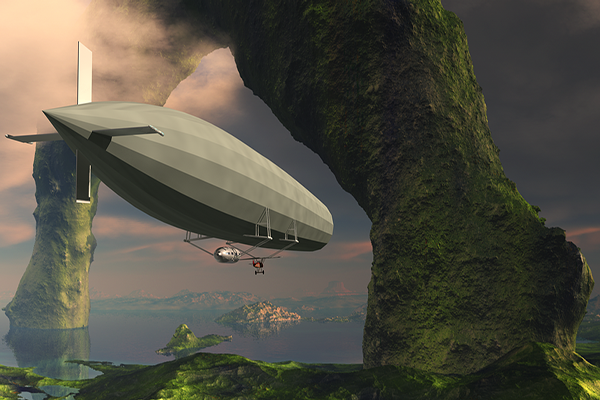
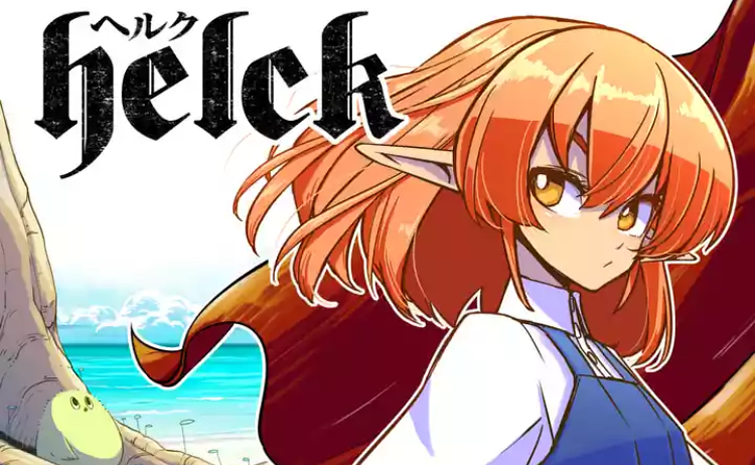
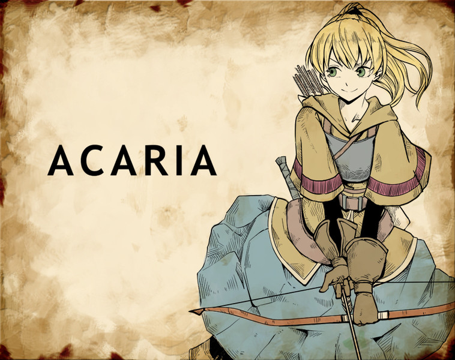
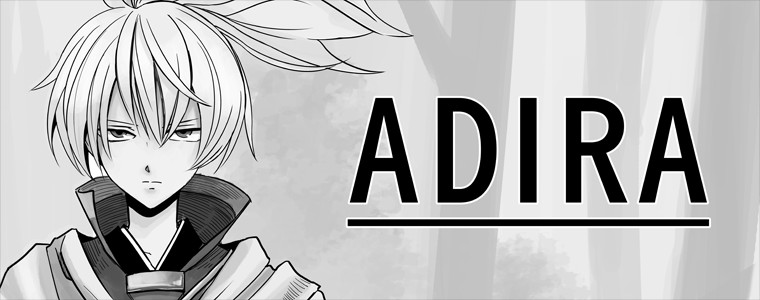

PreviousNext
......はい。
今回紹介するのは漫画家の七尾ナナキさん。
作風はファンタジー漫画が主で、紙媒体ではなくWEBで漫画を連載しています。（裏サンデー、ニコニコ静画など）
代表作は裏サンデーで連載されていた「Helck」でしょう！
「Helck」は裏サンデーの第2回連載投稿トーナメントを二位で勝ち抜きプロデビューを飾った作品で、
時にギャグ、時にシリアス、ファンタジー色全開の名作（自推）です！
以下詳細を書いていきます。
URL：裏サンデー https://urasunday.com

魔界のとある国。1人の勇者の手によって、魔王が倒された。
「もう魔王におびえることはない」と人間達が笑みで溢れかえっていたころ、
魔界では、新魔王の座をかけて熱きバトルが繰り広げられようとしていた！！
そこに現れたのはまさかの…！？
裏サンデー公式サイトより抜粋
上の画像は
 マスコット
マスコット
と
 ヒロイン
ヒロイン
です。
主人公は......

筋肉隆々の大男！！
と まあ厳つい見た目をした大男ですが

さわやかな笑顔、とってもフレンドリーです。
前述のように彼が騒動を起こしたり、はたまた困った御仁の問題を解決したり、
宿命に立ち向かったり
読後の感想はきっと、王道だなぁ......となるでしょう。

少女は失われた自身の記憶を求め旅へ出る。
個人的にはこちらも推したい。
ニコニコ静画に投稿されたこちらは氏がアマチュア時代の作品となります。絵柄は既に今のものに近いです。
「Helck」の場合は主人公が強くて、スタート時点から安心感が強い。
しかしこちらは割と平凡（記憶はない）な出発から始まり、
人間等身大の恐怖だったりワクワクが楽しめる。商業連載（Helck）と趣味(ACARIA)との差なのかもしれません。
なお、今は裏サンデーでACARIAの続きの連載が始まっています。

TIADIUMは最初に投稿された漫画です。これは三話しかないので説明を省きます。

ADIRAはバトル系です、一話のみなので深くは言及しません。

「Helck」に登場したマスコットが主役のスピンオフです。
ゆるっとした雰囲気で「Helck」の読後に読むもよし、
辛い展開が続くときに読むもよし、な癒し漫画です。